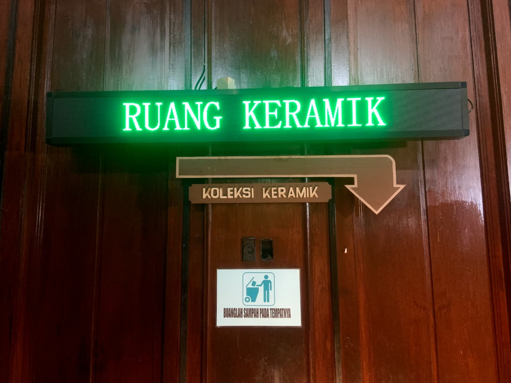

Pusat Edukasi Budaya Kalimantan Timur
Edukasi
Edukasi
Museum Mulawarman
Jelajahi warisan sejarah Kesultanan Kutai Kartanegara ing Martadipura secara interaktif, mendalam, dan terstruktur untuk semua kalangan.
Katalog Modul Pembelajaran
Pilih modul tematik di bawah ini untuk memulai pembelajaran sejarah dan koleksi pusaka museum.

Sejarah Kesultanan Kutai Kartanegara
Menelusuri jejak awal kerajaan tertua di nusantara hingga masa kejayaan Kesultanan Islam.

Koleksi Benda Pusaka & Keramik
Mempelajari mahakarya pusaka kerajaan, guci Tiongkok kuno, dan simbol-simbol kerajaan.

Arsitektur Keraton & Museum
Mengenal gaya bangunan Art-Deco peninggalan kolonial HBM dan tata ruang istana.